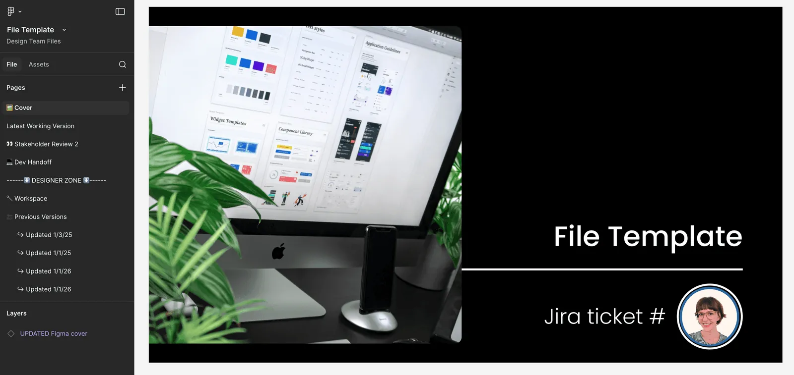
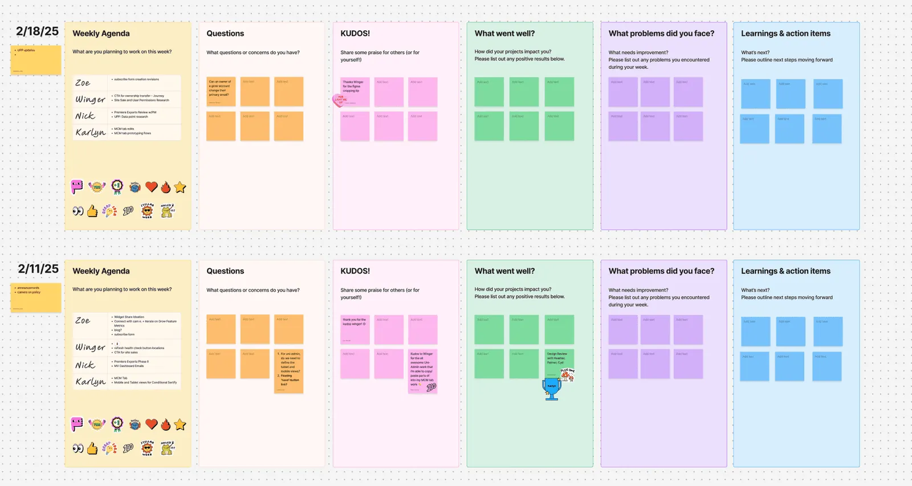
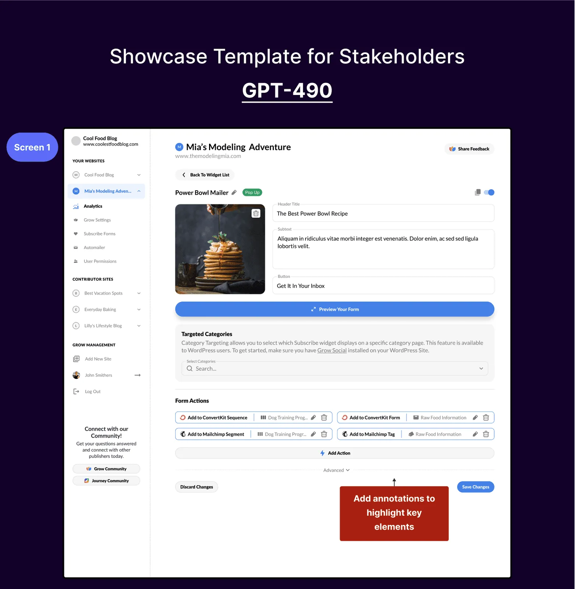
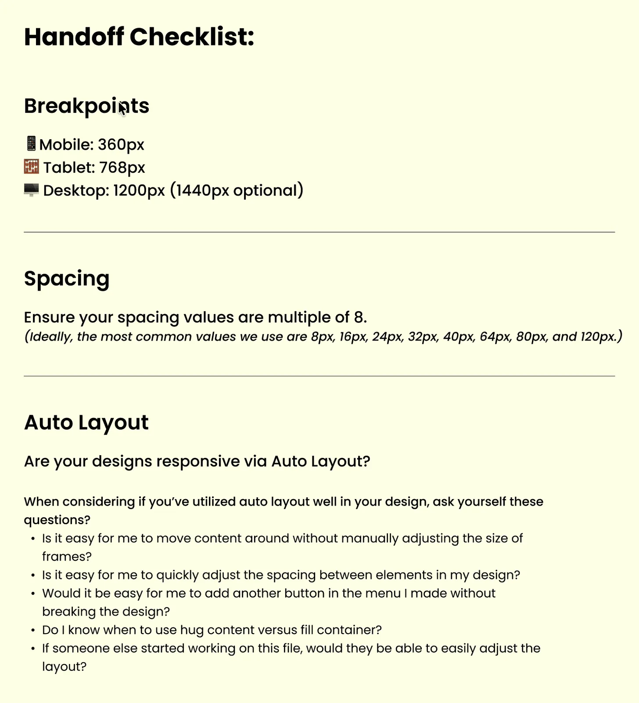

My process.
Here is a glimpse into what the product process looks like on my team. Each project looks a little different depending on priority level, timeline, and overall requirements, but this is an overview of the process I guide my team through for our design tasks.




Above are a few examples of processes I’ve created to help the design team work faster, more collaboratively, and to stay organized.
Planning
I work with Product Managers and Engineering Managers to define the requirements of a project and to determine the scope and KPIs, as well as both user and stakeholder needs.
Exploration and Ideation
Next, based on bandwidth and area of focus, the designer(s) begins creating initial concepts and wires that we refine together. I encourage the team to think big at this stage and explore many ideas that we can later hone.
Peer Review
Once the designer has refined a particular design direction, they’ll present it to myself and the rest of the Design team for review. This step helps us identify potential areas of confusion, detail all possible user flows, and provide positive, actionable feedback to prepare files for hand-off.
Our Peer Review process is light-hearted, fun, and encourages everyone to think about the “why” behind their design decisions.
Presenting Designs and Hand-Off
When presenting to stakeholders, we follow a well-defined process that makes it simple for them to understand each user flow and how they will fit into the broader product.
Once designs have been approved, they’re annotated and spec’d out for dev hand-off using a detailed hand-off checklist. The designers prototype user interactions, define all states, and make sure they’re utilizing our design library of components for consistency.
Testing and Tracking
Once a feature is out in the wild, we track its success through a variety of Hotjar results, survey responses, A/B tests, and internal reporting.
Iterating
Based on the data findings and our initially-defined KPIs, we often iterate on our designs to create the best possible version of a feature for our users.
Curious about how I incorporate AI into my design processes? Read all about it.
Read the case study